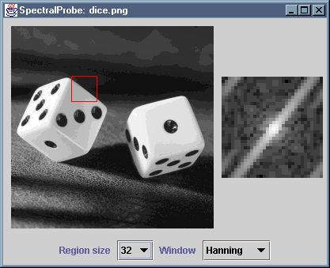

The SpectralProbe application displays an input image and
the spectrum of a small region within that image. The user may select
region sizes of 16x16, 32x32 and 64x64. The position of the region is
chosen with a left mouse click when the cursor is over the point of interest
on the image. A windowing function can be applied to the spectrum, to
reduce the effect of discontinuity at the edges of the region.
The file SpectralProbe.java compiles to produce
SpectralProbe.class SpectralProbe$1.class SpectralProbe$Controls.class SpectralProbe$Display.class
These .class files have been packaged as a single JAR file,
SpectralProbe.jar. You can install the application by copying
this JAR file, along with either the MS-DOS batch file
SpectralProbe.bat or the bash shell script
SpectralProbe.sh, as appropriate. The batch file or script
should be edited to reflect the new location of the JAR file.